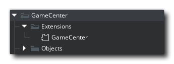
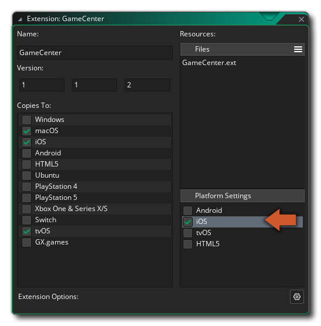

Setup
The Apple GameCenter extension is to be used alongside your Apple Developer account (App Store Connect webpage). All the required personal leaderboard ids and achievement ids should be managed from there.
- For creating leaderboards follow this guide: Adding Leaderboards
- For creating achievements follow the guide: Adding Achievements
- If you intend to use SavedGames functionality you need to create a new iCloud container using your Apple developer account dashboard (dashboard link).
iOS
These are steps specific to the iOS export of the extension:
-
If you intend to use SavedGames functionality. You will also need to config your project following these steps:
-
Double click the GameCenter extension icon on your project:

- Click iOS line under Extra Platforms:

- This will bring you to the code injection panel:

In this panel you need to make sure you have the following code in the SAVED GAMES SECTION:
<key>com.apple.developer.icloud-container-identifiers</key>
<array>
<string>iCloud.${YYBundleIdentifier}</string>
</array>
<key>com.apple.developer.icloud-services</key>
<array>
<string>CloudDocuments</string>
</array>If the code is already there and you are not using this functionality you should remove the section entirely.
macOS
These are steps specific to the macOS export, in order to properly make use of GameCenter extension:
- After exporting the project to macOS YYC using the IDE open the Xcode project in your mac. And follow the described steps in the image below:

- In the Capabilities popup window search for "GameCenter" on the top bar and double click it to add it to your project:

- If you intend to use SavedGames functionality, you will need to also add the "iCloud" capability.
Tip
To add this capability follow step 2. and search for "iCloud" and double click it to add it to your project.

There are some final options you will need to configure when using this capability:
- Enable - ✅ iCloud Documents - from the iCloud section.
- Select the previously created iCloud container.
Tip
You are also able to create a new iCloud container directly from XCode (using the + icon).